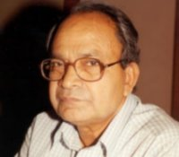
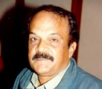
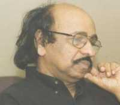
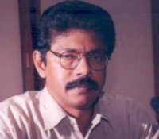

Anand
Anand (P.Sachidanandan), born in 1936 in Irinjalakuda in Trichur district in Kerala is an eminent Malayalam fiction writer and essayist, whose fiction reads almost like texts of high philosophy. His works do not conform exactly to any of the fictional forms currently in vogue. Anand has consistently tried to explore in his fiction fundamental issues of power, justice and the human condition. A major recurring theme in most of Anand's works is the way power and its various abusive manifestations inflict torturous pain and suffering on common people. The process of people coming to terms with this suffering over and over again appears in his works as an historical pattern. Some of his works betray a Kafkaesque streak. His works also demonstrate a deep sense of history, using not only personalities and events from the past, but also reflecting continuously on the lessons that the past teaches us. While denouncing the abuse of power, Anand does not advocate the overthrow of the institutions of power, for instance the state. He strikes a middle path that argues for more sensitization and conscientization of the institutions of power. A radical humanist, inspired by the ideas of M. N. Roy in his early years, Anand is ill at ease with all varieties of absolutist tendencies.

Paul Zacharia
Non-conformist and unorthodox to the core, Paul Zacharia, the eminent Malayalam fiction writer and essayist, was born in 1945 in Kottayam district in Kerala. His short stories and novels, pathbreaking and unconventional in style and theme, are marked by a deep sense of humor, experiments in craft and narrative techniques, and an unsentimental prose. His uncompromising stand and open opposition to the forces he perceives to be communal, retrogressive and reactionary make him a controversial public intellectual who is regularly in the media. As a socially and politically committed and engaged writer, Zacharia scoffs at fellow writers who see themselves in isolation from society, provoking those who remain silent on vital social and political issues of the day to use their literature for social purpose. Considered one of the most important Indian writers living today, his works have been translated into English and other languages. He is a recipient of the Sahitya Akademi Award and Katha Award. The Library of Congress has in its collection thirteen books by him.

Satchidanandan
Satchidanandan, poet, critic and Secretary of the Sahitya Akademi, is one of the best-known literary personalities in India. He was born on 28th May 1946 at Pullut in Thrissur district in Kerala. A poet of intense political and ethical sensitivity, Satchidanandan achieves a fine balance between the cerebral, the visceral, and the emotional in his poetry. While the subtle and the nuanced expressions in his poetry appealed to the literary sensibilities of more enlightened and refined connoisseurs of poetry, its indignant tone and tenor combined with its ardent humanism and emancipatory vision appealed to a wider public. Although his literary criticism draws on complex theory, it is approachable and has introduced Malayalis to contemporary trends in all fields of knowledge. A true globetrotter who has participated in numerous poetry festivals and literary meets in different parts of the world, Satchidanandan is the recipient of many prestigious awards, including the Sahitya Akademi Award and Oman Cultural Centre Award. The Library of Congress has thirty-three books by Satchidanandan, in both Malayalam and English.

Balachandran
Balachandran Chullikad, one of India's most admired and respected living poets, was born on July, 1957 at Paravoor, a small town in Ernakulam District in Kerala. Throughout his school years, he devoted himself to poetry. By early adolescence his creative energy and poetic gifts showed in a poetry that displayed an unusual maturity and openness that questioned the dominant aesthetics which was saturated with romantic lyricism and conventional symbolism, and enabled the start of a free flowing subjective poetic tradition. Years before his first book of poems (Patinettukavitakal, 1982) was published he became the most sought after and quoted poet of Kerala thanks to the poetry festivals and university cultural functions that encouraged bold creative experiments by young poets. Nurtured in the grand epics of India as well as the canons of international modernism, Chullikad stands in the forefront of a generation of poets who wanted to invent a new poetic language.

M. T. Vasudevan Nair
M. T. Vasudevan Nair, one of the most respected Indian writers today, was born on August 15, 1934 in Kudallur, a small village in Palakkad district, Kerala. He rose to eminence through his well-crafted novels and short stories in Malayalam whose romantic poignancy and tender portrayal of the human condition endeared the author to his readers. He captured in subtle detail the pain and anguish that marked the ebb of feudalism in Kerala in many of his novels. A master storyteller, M.T made his way up to be honored with the highest literary award the nation confers on a writer, the Jnanpith in 1995. Prior to that, he had received many awards and accolades like both state and center Sahitya Akademi Awards. He occupied and continues to occupy many important and powerful positions in various literary bodies including the presidentship of Kerala Sahitya Akademi and the chairmanship of Tunchan Memorial Trust.